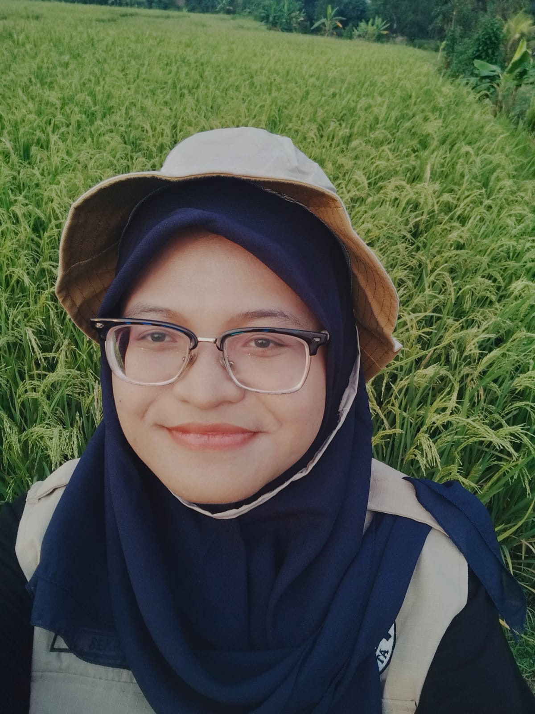
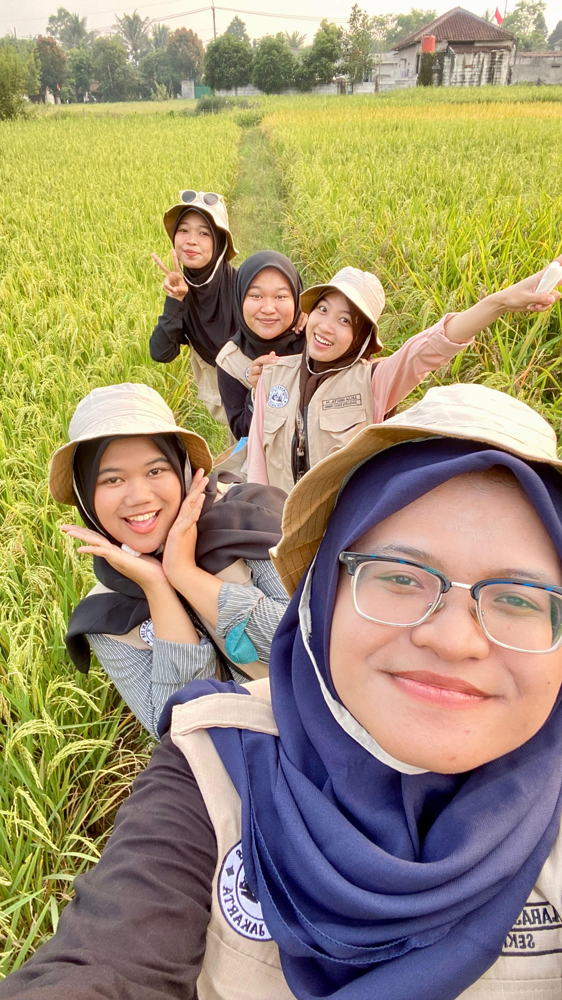
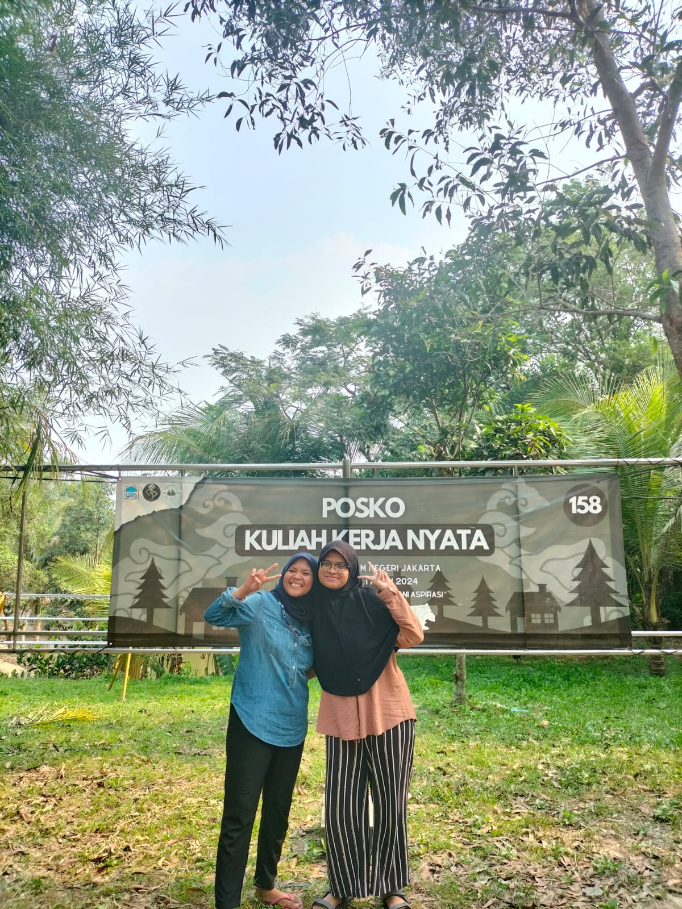
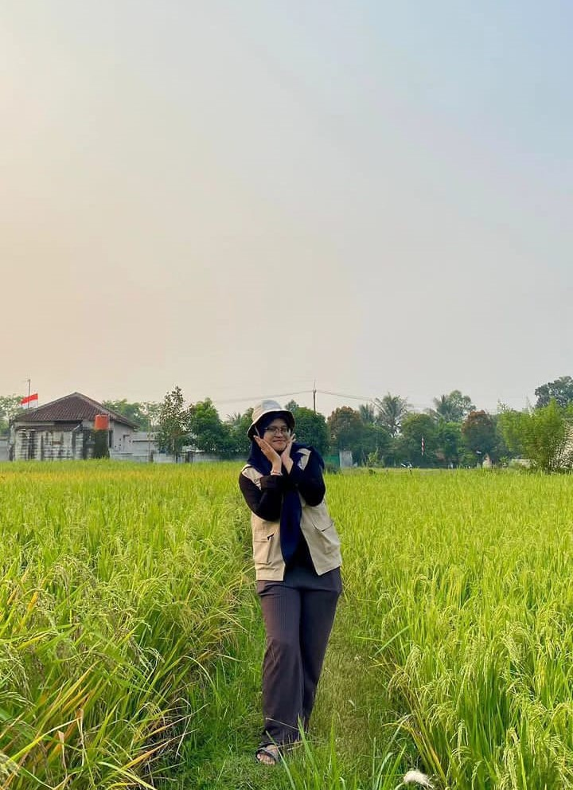
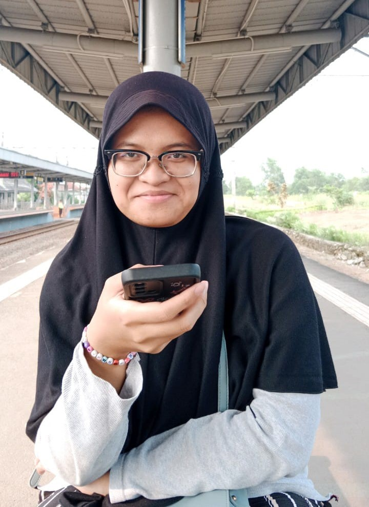
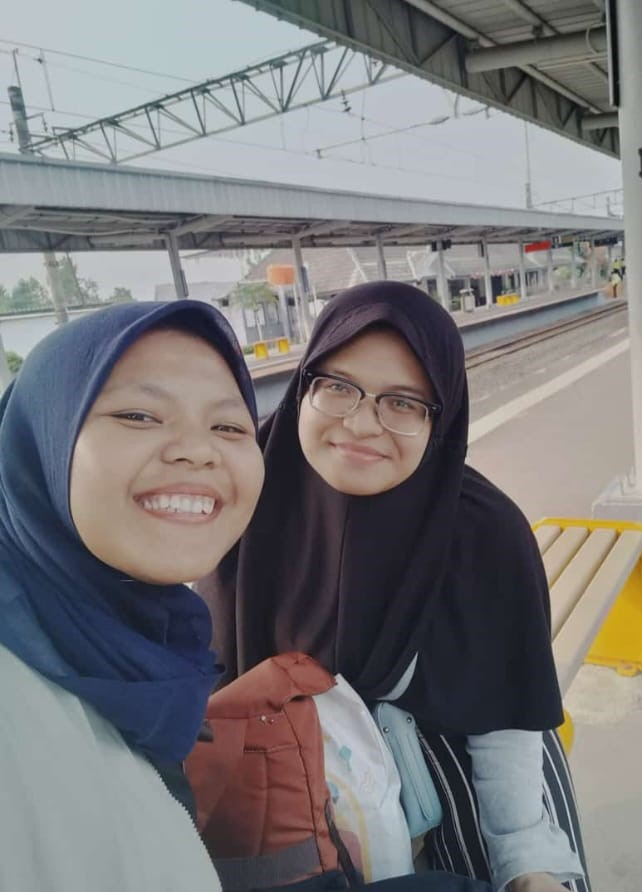
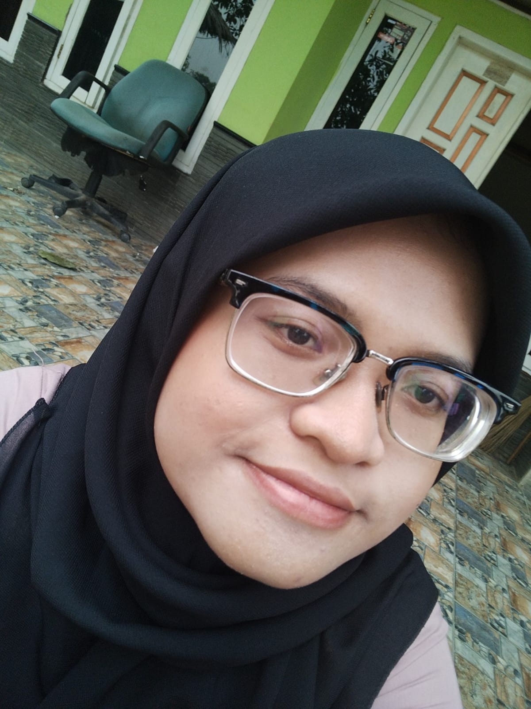
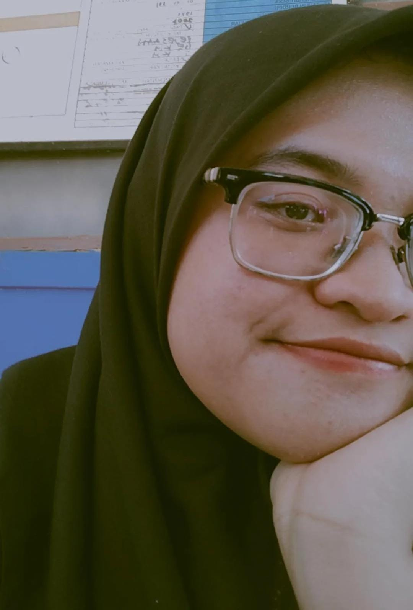
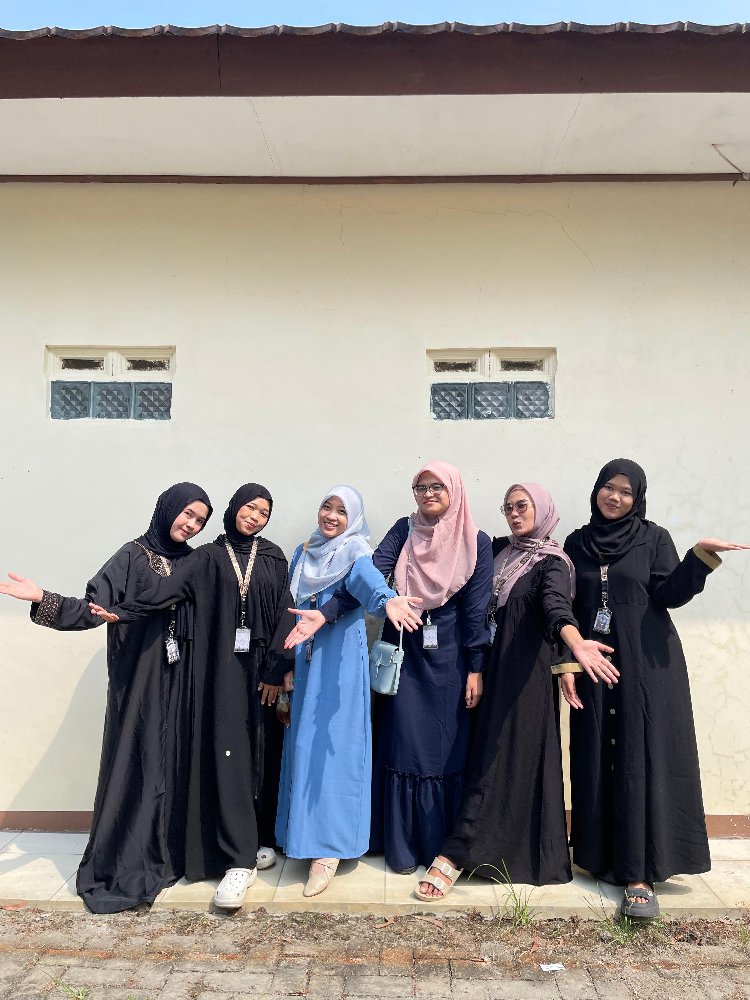

Kepada Soulmateku 💗
Ini bentuk aku mencintaimu sehormat-hormatnya. Sayangku, terimakasih sudah kuat selama KKN ini. Terimakasih karena kuatmu membuatku kuat juga. Terimakasih untuk semua yang sudah kamu lakukan di KKN ini, untuk semua proposal yang sudah kamu buat, untuk semua tulisan yang sudah kamu torehkan untuk menyukseskan KKN Bhisma. Kamu hebat sekali, kamu kuat sekali, kuat yang benar-benar kuat, meskipun ada sakitnya tapi siapa sangka kamu mengikuti semuanya mulai dari pra hingga pelaksanaannya selesai bahkan saat pelaporan nanti. Aku bangga denganmu, pun aku yakin ayah dan ibu jua sangat bangga.
Sayangku, mari kita lupakan manusia-manusia yang tidak menghargaimu itu, mereka tidak penting,
mereka tidak tidak kenal kamu. Biar aku pertegas, kamu laut dan berlianku yang sangat-sangat berharga,
yang hatinya sungguh lapang, kepadamu aku jatuh berkali-kali.
"Kamu sangat berarti, istimewa di hati, selamanya rasa ini."
Ragam tulisan kala rindu padamu menyerangku
Aku mencintai sosok yang sangat menginspirasi. Yang dengannya aku merasa senang yang tak terhingga.
Ia cantik rupa begitupun hatinya yang sungguh lapang, hingga rasanya aku tidak tahu diri. Aku mencintainya layaknya
orang tua pada anak, anak pada orang tua, saudara pada saudaranya, atau semacam itu. Aku mencintainya, sangat mencintainya
meski darah kami tidak sama.
Mari kumulai perjalanan sebentuk rasa yang mula abstrak hingga bernama. Aku kalah pada pertaruhan yang aku
yakin sudah kalah, kala itu kali pertama seseorang melesak masuk dalam hidupku, pada kacaunya dadaku di dini hari,
hal yang tak berani aku harapkan, tapi boleh jadi dialah jawaban Tuhan atas banyak doaku bertahun-tahun ini.
Kedatangannya tak terduga, hening, minim suara, tenang, tidak gaduh, perasaan itu mengalir hangat dari dada hingga kepalaku,
dan ya pada akhirnya aku kalah dan aku menyukai kekalahan itu, kekalahan yang begitu manis, kekalahan yang tidak merugi,
kekalahan yang sangat-sangat kusenangi dan kucintai.
Sayang gigihnya hatiku memperumit semua, walau mengaku kalah tak mudah bagi diri untuk merendah, merunduk,
dan menyambut dengan suka cita sebab gengsi di dada dan kepalaku yang kerap bertarung mendominasi diri ini.
Banyak episode dimana aku sangat-sangat kejam dan menato banyak luka di sekujur tubuhnya. Denganku banyak
sekali daftar panjang terperinci yang amat membekas dalam jiwanya dan selamanya kukira akan begitu. Aku sungguh menyesalinya.
Aku merunduk, Memohon maaf padamu untuk semua luka itu.
Sudilah kiranya biarkan kita satu rasa. Sudilah kiranya persilakan aku menghapus luka itu, aku berjanji dengan sekuat
tenaga selagi nafasku masih ada tiada lagi luka kan menghampirimu.
Aku berusaha menghadirkannya dalam mimpiku untuk balas dendam pada rindu-rindu itu. Rindu yang tak habis namun menggerus. Aku memohon pada malam, pada langit-langit kamarku, pun pada Tuhan.
Kamu ialah buku yang tiada bosan kubaca
Rangkaian kalimat dalam dirimu sungguh cantik
Huruf-hurufmu menjebak ku dalam lingkar cinta
Pun harummu menarikku dari relung nestapa
Kasih, biar kupetik segala sedih dalam matamu
Biar aku menapaki jalan yang sama dalam dadamu
Biarkan segala kita mengalir dalam darahmu
Dan jangan biarkan kakimu berhenti melangkah bersamaku
Kasih, kutahu kau kuat
Meski senyummu dibuat-buat
Sumber : Hati Terdalam Oyen
Galeri Foto
| Cikoya 25 Jul - 25 Ags |
|---|
|  |
|  |
|  |
|  |
 |
|  |
|  |
|  |
|  |
|  Cintakuu bersama teman-temannya |